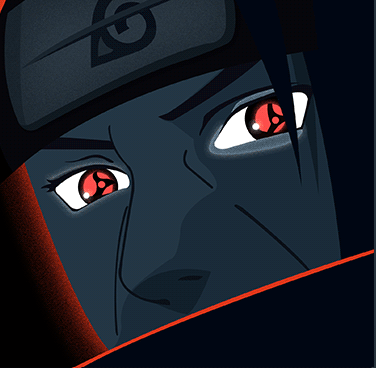

Naruto
Role
Chapter
Skills
SHARINGAN
Uchiha Itachi
The weasel is best illusion. According to the leader
of the coalition perception Force, The weasel
can manipulate other pepole's illusion beyond
the range of perception.
